Guided demo
This guided demo explains how a reusable DOT becomes part of a checked composition. Choose the 10-15-minute live route below, or the five-minute read-only stages later on this page. Both connect authoritative Contracts, Anchors, deployment choices and explicit wires; they prove different things.
The read-only core path takes about five minutes on an existing checkout. It is read-only apart from temporary files created and removed by the CLI. The live presenter route uses Docker and Kubernetes and performs deployment, protocol probes, inspection and cleanup.
|
Run the commands from the DOT-Design repository root. Keep evidence levels separate: a valid plan proves deterministic resolution, a dry-run proves that the executor can render supported runtime actions, and only a live probe proves the observed protocol exchange. |
Choose a path
For MARE use cases, start with the PoC composition walkthroughs: real PoC4 monitoring, PoC10 authenticated policy enforcement, then a labelled PoC6 CACAO/OpenC2 rehearsal using an NWDAF double. Its presenter tasks add a bounded post-verification inspection pause and automatic cleanup, with the same live assertions used by acceptance.
For a fully executable local presentation spanning Docker, Kubernetes, and OpenAPI/GraphQL/Protobuf/AsyncAPI wires, follow Docker/Kubernetes four-Contract composition. It includes the rehearsal, real probe outcomes, cleanup, and evidence boundaries.
| Path | Time | Demonstrates | Runtime mutation |
|---|---|---|---|
Read-only overview |
About 5 minutes |
Repository validation, a reusable external DOT, 21 cross-standard wires, and a Kubernetes lifecycle rendering |
None |
Live presenter route |
About 10-15 minutes after preparation |
Six core concepts, one traced wire, four Contract standards across Docker and Kubernetes, and a real MARE use-case graph |
Disposable Docker and Kubernetes resources |
New developer |
About 15 minutes |
The read-only overview plus selected plan details, authoritative Contract facts, endpoint materialization, and evidence boundaries |
None |
Live acceptance |
Depends on image downloads and host capacity |
GraphQL, all four finite gRPC shapes, and MQTT, NATS, Kafka, and AMQP 0-9-1 delivery against standards-native test producers and real brokers |
Disposable Docker resources |
10-15-minute live presenter route
Use this route for an audience new to DOTs. The detailed stages below remain the reference walkthrough; this section is the talk track, not another harness. For a ten-minute slot, shorten the wire inspection and show the MARE graph as the closing example rather than starting a second deployment.
The three messages to leave with the audience:
-
Reuse a product definition; put PoC-specific configuration in the composition.
-
Keep existing interface standards authoritative; wires are not protocol translators.
-
Distinguish a compatible plan from a verified live exchange and production acceptance.
For technical Q&A, add the five-minute developer extension: inspect a real product’s deployment choices and official Contract provenance, demonstrate rejection of an invalid wire, and show where a PoC contribution belongs.
Before the audience arrives
Follow the mixed-runtime prerequisites
and rehearse on the same Linux-amd64 checkout, installed CLI, Docker and local
Minikube context that you will present. Install this checkout’s CLI for the exact
pinned acceptance suite. Published v0.2.5 includes native topology and presenter
support; a release binary does not include later source fixes, and the version
string alone does not identify the tested binary.
Record the three checkout revisions as shown in that walkthrough.
For the Keycloak/APISIX/OPA/SPARQL follow-up, use
task testing:demo:preflight DEMO=secure-api before deployment. This read-only gate checks the
exact installed CLI revision, local Contracts, cluster readiness, cached images
and namespace/port conflicts. Follow
the secure-API preflight instructions
to keep the same overrides in the presentation terminal.
Select DEMO=four-contracts for the mixed-runtime fixture, or DEMO=monitoring
for node-exporter/Prometheus. Without a selector, the task checks all three routes.
These are point-in-time prerequisite checks, not live acceptance or resource
reservations. In particular, four-Contract preflight checks cached images,
Docker resource conflicts and selected NodePorts, not end-to-end gateway routing.
Pre-download/build the images by completing the existing live acceptance task before the talk, and require successful cleanup:
task testing:demo:docker-kubernetes-four-contracts:liveThe timing below is a speaking budget, not a deployment-time guarantee. Cold downloads, image builds and a slow cluster can exceed it. Keep the previously recorded, revision-matched rehearsal evidence available and label it as such if the live run fails; never describe a plan or saved result as a new live pass. Use an isolated demo network: the example’s plaintext NodePorts and anonymous MQTT are not safe public production defaults. Do not run competing acceptance or cleanup tasks during the presentation.
Minutes 0-2: the problem and the six concepts
Say: "We want to describe a component once and reuse it across deployments and MARE use cases. DOT-Design connects existing interface standards to explicit deployment and composition choices; it does not replace those standards."
| Concept | Audience meaning | In this demonstration |
|---|---|---|
DOT |
Reusable software component description |
Provider, consumer and Mosquitto use canonical catalogue definitions. |
Contract |
Authoritative description of an interface |
OpenAPI, GraphQL SDL, Protobuf and AsyncAPI describe different interactions. |
Anchor |
Named provided or required interaction |
The provider and consumer select the REST alerts operation from its Contract. |
Wire |
Connection between compatible Anchors |
|
Deployment |
How a DOT runs on a selected platform |
Provider and broker run on Kubernetes; consumer runs on Docker. |
Composition |
Participants, connections and deployment-instance inputs |
One locked graph selects those DOTs, deployments, wires and configuration. |
Point out the ownership: DOT-Repository stores reusable DOT bundles and
compositions; dotx in DOT-CLI validates, plans and executes them;
DOT-Domain defines the shared model. DOT-Design brings together documentation
and executable acceptance harnesses. The synthetic demo graph stays in
DOT-Testing; it is not a new production product.
Minutes 2-4: read the topology before deploying
dotx compose topology DOT-Testing/composition/docker-kubernetes-four-contracts/scenario.yaml --locked --color alwaysShow: three DOTs and four logical wires. Match the diagram’s N and W
identifiers to the aligned DOT and connection tables. CONTRACT names the
interface standard; the separate PROTOCOL column names the transport protocol.
Explain provider versus
consumer and the selected runtime, rather than reading UUIDs aloud.
The separate T4 connection identifies MQTT’s broker transport endpoint;
it is not a fifth Anchor wire. Arrows mean logical PROVIDES-to-REQUIRES,
not packet direction: an HTTP consumer may initiate the request.
Expected observation: the graph is available without deploying anything. Parallel wires may share one arrow, but every wire remains in the table. This is a locked plan view, not a live health display.
Minutes 4-6: trace one wire from Contract to configuration
dotx compose plan DOT-Testing/composition/docker-kubernetes-four-contracts/scenario.yaml --locked --json |
jq '.wires[] | select(.name == "rest-alerts") |
{name, from, to, contractStandard, selector, operationPath,
compatibility, materializer}'Say: "The OpenAPI Contract owns GET /alerts. The Anchors select that
operation; the wire names the two participants. The materializer puts the
resolved operation URL into the consumer’s declared OPENAPI_YAML_URL
environment variable. We are not copying the API definition into the wire."
Expected observation: OPENAPI, the selected operation, provider/consumer
Anchor references, COMPATIBLE and the environment-variable materializer.
The template’s 192.0.2.1 address is deliberately not a live target. The
existing harness substitutes the actual Minikube address and locks that
run-specific graph before applying it. Do not manually apply the template.
Limit: compatibility is checked against declared interfaces. It is not proof of reachability, delivery or application correctness. There is no automatic OpenAPI-to-gRPC-to-MQTT protocol translation.
Minutes 6-11: deploy, verify and inspect the live composition
task testing:demo:docker-kubernetes-four-contracts:presentThis is the existing acceptance path with an inspection pause, not a parallel
demo implementation. It deploys through dotx, checks readiness and executes
probes from the actual Docker consumer’s network namespace to Kubernetes.
Presenter mode keeps build and deployment chatter in the printed, owner-only
details.log. The terminal shows the numbered plan, deployment, probe,
inspection and cleanup stages; a failure still reports its stage, exit code
and diagnostic-log location. Ordinary noninteractive acceptance remains verbose.
| Standard | Explain the expected live result |
|---|---|
OpenAPI |
HTTP 200 plus the expected JSON alert; the running consumer derives
|
GraphQL |
|
Protobuf / gRPC |
The selected health RPC returns |
AsyncAPI / MQTT |
The broker delivers the exact uniquely correlated, schema-valid message after subscription acknowledgement. |
Show: the verified pause appears only after all four live assertions and
recorded status checks pass. Keep the first terminal at this pause. In a second
terminal, copy the exact recovery/status command printed by the harness; it
selects this run’s private cache and Kubernetes configuration. Inspect the
per-wire outcomes and redacted result.json, not access tokens or Secrets.
The final live-results table separates CONTRACT, PROTOCOL, OBSERVED and
OUTCOME. It is generated only after each successful probe is also present in
recorded lifecycle status; COMPATIBLE and running workloads do not populate it.
The observations summarize checked assertions, not raw API responses. The same
four rows are saved in result.json and the plain-text results.txt.
Before the pause, point out the controlled negative step: the owned fixture
temporarily returns HTTP 200 with severity low, the native assertion records
RESPONSE_MISMATCH, and the running consumer changes its decision. The harness
then restores the critical alert and requires a newer REVIEW_REQUIRED receipt
and successful native assertion. This distinguishes endpoint health from
correct application data; it is not a claim of complete schema or policy validation.
The reprinted topology is still a plan view; use status and probe evidence
for live results.
State the boundary: Mosquitto is a real external broker, but provider and consumer are test-only DOTs with standards-native fixture Contracts, not vendor-official or MARE producer APIs. The consumer now executes the REST exchange and derives a synthetic review decision; explicit probes exercise GraphQL, gRPC and MQTT from its network namespace. The MQTT probe subscribes and publishes to prove broker delivery, not a provider application’s business-event publication. This verifies interoperability mechanics across runtimes, not a production application or the whole MARE stack.
Minutes 11-13: relate the mechanism to a real MARE use case
Keep the live demo paused and show this separate, read-only catalogue graph:
dotx compose topology \
DOT-Repository/Compositions/keycloak-apisix-opa-sparql/composition.yaml \
--locked --color alwaysSay: "The same model expresses a PoC10-derived protected data service: Keycloak supplies identity, APISIX gates access, OPA decides policy, Oxigraph serves SPARQL and a client obtains a token and requests the protected capability." Point to the five wires, then explain that this graph has not been deployed by the four-Contract demo.
For a longer session, use the existing
task testing:pocs:present:secure-api in a separate, rehearsed run. Its live
checks require HTTP 401 for missing and malformed bearer tokens,
authenticated POST 403, and an authorized
GET reading the stored mare-poc10 value. See
MARE PoC composition walkthroughs for prerequisites
and commands. This is source-adapted evidence: Oxigraph substitutes for GraphDB,
the client is synthetic, and SPARQL/OPA use explicit protocol interfaces rather
than fabricated official OpenAPI Contracts. It does not accept the complete
producer deployment, LDAP, telemetry or automated response.
Minutes 13-15: clean up and leave a reproducible next step
Return to the paused demo terminal and press Enter. Expect a receipt with
cleanup=PASSED and exit=0; the harness checks its owned resources for
leftovers. Ctrl-C also invokes cleanup and exits 130. EOF, timeout and SIGTERM
are non-success exits with cleanup, not successful acceptance. The inspection
pause defaults to ten minutes; see the mixed-runtime walkthrough for its bound.
If cleanup fails, retain the receipt and use that walkthrough’s recovery
instructions. Never delete unrelated namespaces, containers or volumes.
Close with: "A valid definition is not a running workload; a compatible plan is not a successful exchange. We have shown the live results and their limits."
Direct attendees to Getting started to deploy real Prometheus, the reusable PoC walkthroughs to explore compositions, and Anchors and Composition to author their own integration. Keep the verification matrix available for questions; do not equate catalogue validity with production readiness or claim DOT-Registry REST API or joint SFC acceptance.
Audience FAQ
Why not just use Docker Compose, Kubernetes or Helm?
Those tools remain the native deployment mechanisms. DOT adds a reusable
component description, authoritative interface references, named interactions,
explicit cross-component wiring and a checked composition plan. dotx delegates
supported deployment actions rather than replacing those platforms. If an
existing Compose file is all a use case needs, DOT’s additional value is the
shared catalogue and interoperability description, not a different container
scheduler.
What is reused, and what changes between PoCs?
The product’s canonical dot.json, Contracts and Anchor identities are reused.
A composition selects participants and deployments and supplies use-case-specific
configuration: routes, policies, scrape targets and credential references.
There is no need to create another Keycloak DOT for every PoC. Runtime platform
means where it runs; deployment mechanism means how it is deployed.
Does connecting two Anchors make incompatible APIs work together?
No. Wires connect declared compatible interactions; they do not translate OpenAPI, GraphQL, gRPC or MQTT automatically. An application-specific adapter, if required, must be implemented and described explicitly. The four-Contract demo verifies four separate standards-native exchanges, not one message automatically converted through four protocols.
Is a Contract the same as a protocol? Are all Contracts official?
No. OpenAPI is an interface-description standard; HTTP is a protocol used by
the selected operation. Protobuf describes messages/services used by the gRPC
profile; AsyncAPI describes messaging interactions and transport bindings.
The topology table separates CONTRACT from PROTOCOL for that reason.
Use vendor/project-official documents when available. Source-derived Contracts
and test-fixture Contracts must be labelled, not advertised as official.
An explicit protocol interface is not an invented official Contract; the
topology labels that case explicit interface. A - on a transport-only
T link does not create another Contract-backed Anchor wire.
Does validation mean a DOT is production-ready?
No. Base validation checks definitions and declared references; stricter interface checks assess declaration completeness. A locked compatible plan checks the selected graph. A successful deployment establishes a runtime state. A live probe verifies a particular observed exchange. None alone proves full business functionality, resilience, security hardening, scale or acceptance of an unmodified PoC producer. Read the declared scope with each result.
What does the lock file guarantee?
It pins the composition’s portable definition inputs and resolved plan so that unreviewed definition changes are detected. It does not freeze runtime health, network addresses, credentials or upstream service behavior. Contract payload digests verify the referenced bytes; a downloadable URL is not itself evidence that the live implementation conforms to the whole Contract.
Where do credentials and configuration belong?
DOTs declare supported service configuration. Compositions provide deployment inputs and secret references; secret values and concrete runtime state are not part of a reusable public interface description. The PoC10 rehearsal uses native Kubernetes Secret references. Do not display Secret contents, tokens, raw deployment state or private diagnostic logs during the talk. The four-Contract fixture uses plaintext/anonymous demo settings and is not an example of production security hardening.
What did this presentation actually demonstrate?
The Docker/Kubernetes demo runs test-only provider/consumer components and Mosquitto, then verifies four exchanges from the consumer’s network namespace. The PoC10 topology relates the same concepts to a source-adapted use case; showing that graph does not deploy or accept it. Its separate live rehearsal checks authentication, denial and a stored-data read. A producer double, stub, planning fixture or source adaptation must remain visibly labelled. DOT-Registry REST API and joint SFC/partner acceptance are not claimed by either demo.
How can an attendee try this afterwards?
Start with the real Prometheus quickstart, which needs neither a Java/Go development toolchain nor Kubernetes when using the supported released binary. Then explore reusable compositions and the authoring guide. The new topology and presenter features require the installed development checkout described above; do not assume an older release contains them.
The story in one diagram

The Contract owns protocol semantics. An Anchor gives one selected Contract operation a stable logical identity. A deployment-service binding identifies the service port that implements the Anchor. A composition wire connects two named DOT instances and may materialize the resolved endpoint into configuration already declared by the consumer.
Prepare the checkout
For a first deployment with the released CLI, follow
Getting started. This presenter path uses a full
checkout from Contributor guide with initialized
DOT-CLI and DOT-Repository submodules. The demo
needs dotx, jq, and network access when URL-backed Contracts are not already
cached.
git submodule update --init --recursive
task cli:install
dotx versionSource builds use DOT-CLI/VERSION, which may advance independently of the
published release. The published release reports:
dotx 0.2.5The independently released Linux-amd64 binary, its SBOM, release manifest, and
checksums are also available from the
DOT-CLI v0.2.5 release.
Use sha256sum --check SHA256SUMS before executing a downloaded release asset.
Stage 1: validate the authoritative catalogue
dotx validate DOT-RepositoryThis recursively discovers every dot.json; there is no separate inventory.
The command validates schema shape, identities, Skills, Contract payload
integrity, selectors, service ports, Anchor bindings, repository placement,
and catalogue-wide uniqueness. Contract-backed external and internal bundles
also receive the strict reusable profile.
Stage 2: inspect a reusable external DOT
Keycloak is a useful example because its canonical DOT uses official, digest-pinned Contracts while offering multiple deployment mechanisms.
dotx inspect DOT-Repository/DOTs/external/Keycloak-DOT --json |
jq '{name, version,
skills: (.skills | length),
contracts: (.contracts | length),
anchors: (.anchors | length),
deployments: (.deployments | length),
supportedDeploymentSystems}'The 0.2.4 catalogue produces this compact projection:
{
"name": "Keycloak-DOT",
"version": "0.2.0",
"skills": 2,
"contracts": 3,
"anchors": 4,
"deployments": 4,
"supportedDeploymentSystems": [
"DOCKER_COMPOSE",
"DOCKER_IMAGE",
"HELM_CHART"
]
}Stage 3: resolve the cross-standard composition
The canonical Contract matrix connects six DOT instances with 21 compatible wires. Its committed lock pins every DOT, Contract, configuration input, and portable resolved plan.
dotx compose lock \
DOT-Testing/composition/contract-standards/scenario.yaml --check
dotx compose validate \
DOT-Testing/composition/contract-standards/scenario.yaml --locked
dotx compose plan \
DOT-Testing/composition/contract-standards/scenario.yaml --locked --json |
jq '{apiVersion, name, version,
dotInstances: (.dots | length),
wires: (.wires | length),
compatibleWires: ([.wires[] |
select(.compatibility == "COMPATIBLE")] | length),
standards: ([.wires[].contractStandard] | unique),
interactions: ([.wires[].providerInteraction] | unique)}'Expected summary:
{
"apiVersion": "dot.mare6g.eu/v1",
"name": "contract-standards-matrix",
"version": "1.0.0",
"dotInstances": 6,
"wires": 21,
"compatibleWires": 21,
"standards": ["ASYNCAPI", "GRAPHQL", "OPENAPI", "PROTOBUF"],
"interactions": [
"BIDIRECTIONAL_STREAM", "CLIENT_STREAM", "MUTATION", "QUERY",
"REQUEST_RESPONSE", "SEND", "SERVER_STREAM", "SUBSCRIPTION"
]
}The project gate asserts the complete result rather than only printing a summary:
task testing:compose:contract-standardsFollow one AsyncAPI wire
Inspect the Kafka wire to see how standard-derived facts and deployment facts remain separate:
dotx compose plan \
DOT-Testing/composition/contract-standards/scenario.yaml --locked --json |
jq '.wires[] | select(.name == "asyncapi-kafka") |
{name, compatibility, contractStandard, contractFormat,
providerInteraction, consumerInteraction, channelAddress,
connectionEndpoint, materializers, probe}'The AsyncAPI Contract supplies the complementary send/receive operations, channel, message schema, Kafka binding, and correlation field. The composition selects the broker instance and materializes its resolved address and topic for the consumer. A plan still does not claim that a message was delivered.
Stage 4: render a lifecycle without mutating it
The APISIX, Keycloak, and OAuth-client scenario demonstrates dependency order, configuration materialization, native Kubernetes Secret references, rollout readiness, and an exposed Anchor:
dotx compose lock \
DOT-Repository/Compositions/keycloak-apisix-oauth/composition.yaml --check
dotx compose apply \
DOT-Repository/Compositions/keycloak-apisix-oauth/composition.yaml \
--locked \
--namespace dot-guided-demo \
--dry-run \
--forward protected-metadata-through-gateway=19080The rendering ends with:
Dry run complete; composition state was not written.The command may create bounded temporary rendering files and removes them when it exits. It does not create Kubernetes resources, start a port forward, or write composition state. The rendered order is Keycloak, APISIX, then the OAuth client, matching the declared readiness dependencies.
Stage 5: connect claims to evidence
| Claim | Executable evidence | Boundary |
|---|---|---|
Catalogue correctness |
|
Static and Contract resolution evidence; no deployment |
Cross-standard interoperability |
|
21 deterministic compatible plans; no live traffic |
Live Contract probes |
|
Standards-native test producer and real brokers on disposable Docker resources |
Runtime configuration portability |
|
Dry-run rendering across six adapters |
Workload isolation |
|
Live repeated Compose, Kubernetes, and Helm instances |
Portable-runtime isolation |
|
Live Vagrant/libvirt and WASI CLI instances |
Released-product acceptance |
Linux amd64, single-host supported profile |
See Verification and examples for the complete test matrix and the distinction between model, plan, dry-run, source-adapted, and live production evidence.
Optional: run the live Contract probes
|
This path builds images, starts disposable Docker workloads, and downloads pinned images when absent. Use the presenter path when time, network, or host capacity is uncertain. |
task testing:compose:contract-probes:liveThe harness builds a standards-native GraphQL/gRPC producer and an independent
consumer, then deploys the canonical Mosquitto, NATS, Kafka, and RabbitMQ DOTs.
It proves GraphQL query, mutation verification/cleanup, and GraphQL-over-SSE;
all four finite Proto3 NO_SIDE_EFFECTS gRPC shapes through reflection; and
correlated MQTT, NATS, Kafka, and AMQP 0-9-1 delivery. It records redacted
evidence and destroys composition-owned resources on success, failure, or
interruption.
Five-minute presenter script
-
Show the Contract-to-Anchor-to-wire diagram and explain the four ownership boundaries.
-
Run
dotx validate DOT-Repositoryto establish that the catalogue is the checked source of truth. -
Inspect Keycloak to demonstrate one reusable product identity with several deployment choices.
-
Print the 21-wire plan summary and highlight the four Contract standards and eight interaction forms.
-
Inspect the Kafka wire to distinguish Contract semantics from its resolved broker endpoint.
-
Render the APISIX/Keycloak/OAuth lifecycle with
--dry-run. -
Finish on the evidence table and state the supported boundary explicitly.
Keep the published release notes and verification matrix open as fallback evidence if a local network or runtime is unavailable.
Supported boundary
The stable profile supports Linux amd64 and private single-host composition state. Multi-host orchestration, automatic cross-platform gateway provisioning, general stateful-data migration, AMQPS, AMQP 1.0, native arm64 and non-Linux executables, the DOT-Registry REST API, and joint SFC or partner acceptance are separate activities. Unsupported combinations fail closed rather than being silently approximated.
All eleven MARE PoCs have planning or source-adapted evidence. That evidence is not presented as acceptance of every unmodified partner workload. Continue with Architecture for system boundaries or DOT Anchors and Composition for authoring and lifecycle details.